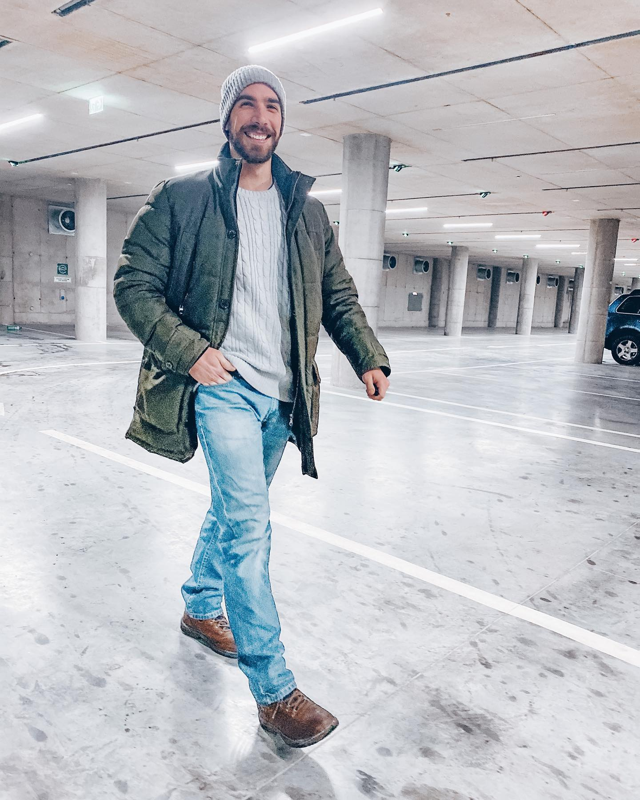

Summary
Physiotherapist with extensive clinical and sports experience (incl. national basketball teams).
Focus on active rehabilitation, return-to-sport, and patient education.
University teaching background and scientific presentations.
I aim for measurable outcomes, clear communication, and personalized programs.
Education
- B.Sc. Physiotherapy — Albanian University, License No. 17609 (2021–2024)
- M.Sc. Physical Activity & Health — Sports University of Tirana (2014–2016) — micro-thesis on nutrition knowledge & physical activity among students/general population
- B.Sc. Physical Activity, Health & Recreation — Sports University of Tirana (2010–2014) — thesis on proprioceptive training and posture/balance
- High School Diploma — “Faik Konica” (2007–2010)
Training/Certications
- MT1 Manual Trigger Point — David G. Simons Academy (30 Apr 2023)
- Top 30 Dry Needling — David G. Simons Academy (12 Feb 2023)
- Lymphatic Drainage, Physiotherapy — Musa Academy (6 Jan 2022)
- Public Health (Intensive International Course) — Novi Sad, Serbia (Nov 2015)
Skills
- Orthopedic & Post-Op Rehab | Sports Rehab | Program Design
- Patient Education & Ergonomics | Proprioceptive / Balance / Posture training
- MS Office | Adobe Photoshop, Adobe Premiere Pro
Languages
- Albanian (Native)
- English-APTIS C1
- Italian-self taught
- German - Goethe Zentrum A2
Publications / Scientific Presentations
- Proprioceptive sway on posture and balance improvement — 3rd Scientific Conference, Athens (2015)
- Correlation between BMI and cognitive functioning… — ECSS Congress, Barcelona (2013)
- BMI and reaction time in secondary school pupils — ICRAE, Shkodër (2013)
- Impact of treatment with physical exercise… injured athletes — MSA Conference, Dubrovnik (2019)
Experience
- Physiotherapist — Klinika Canaj (2017–Present)
- Orthopedic rehab, post-operative protocols, return-to-sport planning.
- Patient education, active rehab programming, progress tracking.
- Physiotherapist — National Basketball Teams (2017–2024)
- On-court and off-court support; preventive and recovery programs.
- Lecturer — University of Medicine, Tirana (2016–2023)
- Courses: Massage, Sports Rehabilitation, Sports Medicine, Traumatology, Orthoprosetics, Physiotherapy (BSc/MSc).
- TV Presenter — “E Diela Shqiptare”, TV Klan (2015–2016)
- Segment: “Ka një mesazh për ty”.
- Instructor / Personal Trainer (2011–2014)
- Alsion Fitness Club, Kinetic Fitness, Nobis Wellness, Static Fitness, Vesa Center.
- Sports Referee
- Basketball (FSHB) 2010–2024
- Football (FSHF) 2010–2015.
Other